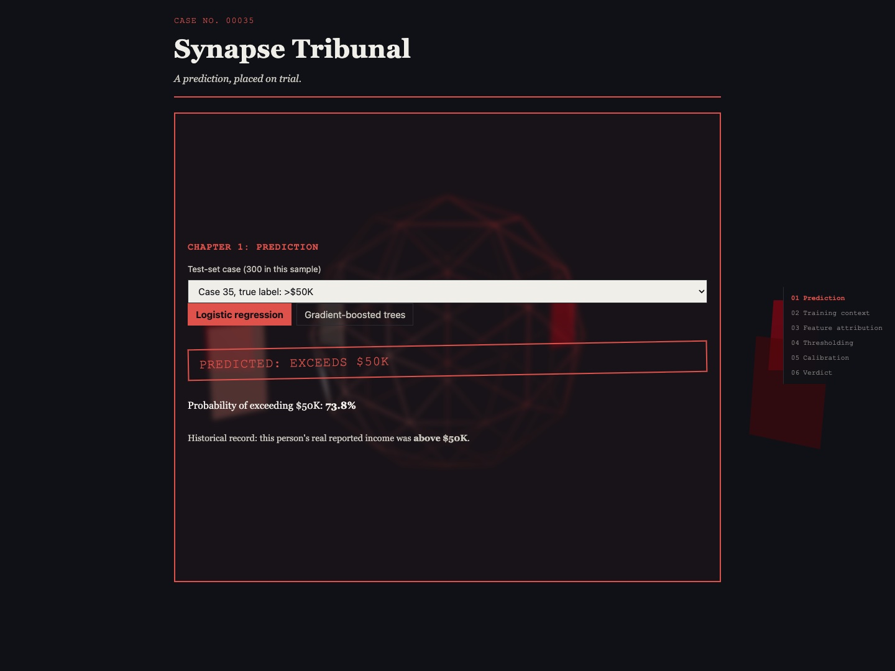

React · Three.js · Explainable ML · Linear SHAP · 2026-10
SYNAPSE TRIBUNAL
One income prediction, placed on trial: a real logistic model's attributions, counterfactuals, contradicting evidence, threshold and calibration, cross-examined in six chapters over a persistent WebGL evidence chamber.

Every number on the site is computed, never scripted: a logistic regression and a gradient-boosted model trained on the public Adult census dataset (OpenML 1590), with the browser's own TypeScript port of the logistic model matching scikit-learn's predict_proba to under 1e-4 on all 9,045 test rows. The data is from 1994, attributions are exact only under feature independence, and 21.9% of test rows duplicate a training row; all three are stated on the site, not just here.
01 — The problem
Explainability dashboards usually show a bar chart and stop. A single prediction raises harder questions: which inputs drove it, what is the smallest realistic change that would reverse it, which real person in the training data contradicts it, how much the verdict depends on an arbitrary 0.50 threshold, and whether "73.8%" means anything at all, given how well the model is calibrated. This project treats one prediction as a case on trial and asks each of those questions with real computation, in the browser, without presenting an approximation as an exact answer or a simulation as inference.
02 — What I built
Six scroll-driven chapters, each built around one real interaction, over a persistent three.js "evidence chamber" whose core and attribution planes are driven by the same live numbers as the text beside them. Chapter 1 selects a test-set case and a model. Chapter 2 shows the nearest training-set person with the opposite label. Chapter 3, the flagship, lets you edit any combination of the actionable features (schooling, hours, capital gain and loss, sector, occupation), recomputes the prediction and its closed-form linear SHAP attribution live, and searches for the nearest feasible single-feature change that flips the verdict, while protected characteristics (age, sex, race, marital status, relationship, country) are stamped "not editable" and never perturbed. Chapter 4 moves the threshold against a real 99-row sweep over the full test set. Chapter 5 shows ten real reliability bins. Chapter 6 compares two cases' explanations side by side.
- A cinematic 0-12s intro: beats reveal with a clip-path wipe rather than a fade, so text is never shown at low contrast mid-transition (an opacity fade measured 1.84:1 and was replaced).
- Three compositions, not one reflow: a side rail with full WebGL at 1300px and wider; sticky top tabs plus a live verdict strip from 768 to 1299px; a bottom tab bar, the verdict strip and 44px touch targets below 768px, where the WebGL chunk is never downloaded.
- No fabricated explanations: the boosted model has no live evaluator or attribution in the browser, so switching to it shows only its own precomputed probability and clears any edit, instead of borrowing the logistic model's reasoning.
03 — How it was built
- 01
Two engines for the same math, checked against each other
The Python reference (scikit-learn plus a manifest-driven reimplementation) trains both models and exports fixtures; the browser runs its own TypeScript port of the logistic model, attribution and counterfactual search. Parity is checked on every one of the 9,045 test rows, and the attribution is checked to sum back to the model's logit. For case 35 the app shows a 73.8% probability of exceeding $50K, with years of schooling (+1.351 logit), marital status (+1.172), occupation (+0.507) and sex (+0.248) pushing it up, and capital gain (-0.340) and capital loss (-0.056) pulling it down.
Logistic regression: test AUROC 0.9045, Brier 0.1049 Gradient-boosted trees: test AUROC 0.9260, Brier 0.0916 TypeScript vs sklearn predict_proba: < 1e-4 on all 9,045 test rows sum(attribution) + base logit = logit(x), within 1e-3, both languages - 02
Independent adversarial reviews before and after going live
Reviewers worked in isolated git worktrees, retrained the models from scratch (fixtures came out byte-identical), and took their own screenshots. The first found the counterfactual search picking the most decisive categorical flip rather than the minimal one, and an untested interaction. The second rejected the build: the intro restarted whenever the page scrolled, a global error listener killed the WebGL renderer on any unrelated page error, and the tablet and mobile layouts were a reflow. The third confirmed every blocker fixed in Chromium, Firefox and WebKit. A fourth, run before publication, found the chapter rail's idle text at only 4.62:1 (its documented figure was wrong) and the Pages workflow granting deploy permissions to the build job; both were fixed before anything went public. After deployment, two more independent passes tested the public site itself in all three engines. They found chapter 6 able to compare a case with itself after chapter 1 switched to it, chapter 3 silently reverting one edit when another was made, an empty initial state in chapter 5, focusable content hidden behind the intro, tablet tab labels that did not match their accessible names, and WebKit drawing selects too small for touch; each was fixed and redeployed. Each regression test was confirmed to fail against the defective code before it was trusted.
- 03
Five fallback layers so WebGL can never take the page down
WebKit's context loss once blanked the whole app. The renderer is now a lazy chunk behind feature detection, never fetched below 768px, rendered on demand only, wrapped in an error boundary, and guarded by error and unhandled-rejection listeners scoped to its own chunk (a release check asserts three.js is bundled nowhere else, because the scoping depends on it), with real context-loss recovery. Tests crash the render loop on purpose and confirm the page survives.
- 04
A release auditor that has caught its author
npm run release:checkrefuses to pass unless the tree is clean and every doc, ledger row, typecheck, lint, unit suite, build, bundle invariant and the 3-engine Playwright suite with axe-core passes. It caught a 2px overlap between the chapter rail and the content at exactly 1300px, introduced by the author's own fix for a contrast finding, before anything was published.
04 — Results
Verified on the live site, not only locally: the full 189-test Playwright suite (63 tests in each of Chromium, Firefox and WebKit, including axe-core in every chapter, WCAG 2.2 AA at tablet and phone widths, and mid-way through the intro) passed against the public GitHub Pages URL, and the deployed JavaScript bundle is byte-identical to the build the release check passed. Lighthouse on the public URL: mobile 99 performance and 100 accessibility, best practices and SEO, LCP 1.7s; desktop 100 on all four, LCP 0.4s; CLS 0 on both. An independent verifier re-implemented the logistic model from the published manifest and matched every fixture probability, counterfactual and combined edit the site shows. Locally: 25/25 Vitest and 69/69 pytest, and frame pacing on a real GPU showed no dropped frames scrolling forward or back.
05 — What I'd do next
- A multi-feature counterfactual search; today's search changes one feature at a time and says so on the page.
- A grouped train/test split that removes the 21.9% of test rows duplicating a training row.
- A real mobile control layout (a bottom sheet) and a lightweight mobile scene, instead of enlarged controls on a static background.